The OSCE Manager Manual
Important!
Please be aware that this manual is still in the process of being written and therefore not yet complete!
The OSCE Manager Manual is a user guide for the OSCE Manager. It mainly serves as a reference guide that should cover most of the questions that may arise in everyday use of the application. For a general overview and quick introduction to the OSCE Manager we advise you to have a look at the 12 minute introduction video.
Like the OSCE Manager, the manual is written and maintained by the Medical Faculty Of The University of Basel For any inquiries regarding this manual, please write an email to .
1 Introduction and overview
As has been mentioned in the abstract, we suggest to have a look at the introduction video. It guides you through the process of organising an Objective Structured Clinical Examination step by step and thereby gives you an overview of all the modules of the OSCE Manager and how they roughly interact with each other. This video is the quickest way to delve into the matter.
This first chapter of the manual will give you a more general overview about what the OSCE Manager consists of. First the rough architecture of the system the software runs on is explained without getting too technical. This may help you to better understand certain features of the software. Furthermore we will explain the basic user interface of the application as well as how the software is divided up in several modules and how they interact.
1.1 System Architecture
The OSCE Manager as a whole basically consists of two seperate applications, that would usually be running on different servers. The first is the OSCE Manager itself, while the second application is the SP Portal, which is intended to be accessible via the internet, so as to allow simulated patients to fill in their personal details or participate in surveys. In figure 1-1 you see this concept graphically illustrated.
1-1: Graphical illustration of OSCE Manager and SP Portal architecture.
The data synchronisation between the two applications is initiated manually by a user of the OSCE Manager. The SP Portal application only stores simulated patient data temporarily, for as long as it is required to be accessible by the SP. Typically both applications are installed on different web servers and therefore are accessed via different URLs, for example the OSCE Manager may be accessible through https://osce-manager.private.myuniversity.edu whereas the SP Portal could be reachable by e.g. entering https://sp-portal.myuniversity.edu in your web-browsers address bar.
Important: Please be aware that the above URLs are only examples! Please ask your system administrator for the URLs that are used at your institution!
1.2 User Interface
When you start the OSCE Manager you will be confronted with the SP management view. As soon as you click on an entry of the table you will see that the view is roughly divided into four segments. Illustrated in figure 1-2 is said perspective with the four segments, colored in red, green, blue and yellow for ease of explanation.
1-2: The main user interface segments of the application, which are colored red, green, blue and yellow in this screen shot.
The main components are:
- Red: The applications navigation menu where you select the actions you want to perform.
- Green: In the section to the right of the navigation you often have a table like the one here. There are tools available to filter, navigate and sort the table.
- Blue: If there is a table in the green area, often there is the possibility to see more details for the objects that are displayed in the table by clicking on them. If this is the case, you will see more details pop up in the blue marked area.
- Yellow: Throughout the whole application you have the possibility to change the display language as well as the table size. The table size is the number of entries that is usually displayed per page in tables.
You will mostly only use the left mouse button for clicking. There are very few instances where the right mouse button is used.
TODO: FFINISH THIS CHAPTER... GONNA DO MORE PRACTICAL STUFF NOW...
1.3 Modules
The OSCE Manager consists of several modules that play together. In the navigation menu of the software you see several boxes that basically make up these modules. In figure 1-3 you see all the elements of said menu.
1-3: Navigation menu of the OSCE Manager.
The elements SP, Examiners, Role, OSCE Administration and System Administrations are outlining everything that is possible in this application.
- Under SP, the simulated patient database can be found. There, you have the possibility to enter SP data, search for SPs, create and edit a custom questionnaire that you want SPs to fill out and you may also define body attributes that SPs may have.
- Examiners contains the database of examiners, that could participate in OSCEs. It is structured similar to the SP database, but is less sophisticated. In the OSCE Manager, examiners belong to clinics, which are also managed within this module.
- The Role menu entry is basically a database of all the roles that could be used or played by an SP during an OSCE, wehereas each role consists of everything required to discribe it such as scripts, checklists, inventory lists, etc. The roles are categorized and these categories are managed within this module as well.
- In OSCE Administration you plan, schedule, execute and analyse the OSCE. For each semester in which you want to organize OSCEs you usually go through a step-by-step progress that is mirrored by this menu.
- System Administration is a collection of things and tools that are not used on a daily basis. These are mainly masks for entering specific data into the database that has not to be regularly used or updated, such as the rooms which could be used for conducting an OSCE within.
Detailed descriptions of the modules can be found in the respective chapters.
As mentioned in chapter 1.1, there is also the SP Portal, which could be considered a module as well, but is actually rather a tool that helps you work with the modules SP and OSCE Administration.
2 The simulated patient database
The simulated patient or SP database is a core part of the OSCE Manager application. Stored within it are all the SPs that did or will participate in an OSCE. This chapter focuses on working with said database and explains what can be done with it. Note, that some functionality is aided by the SP Portal which will be explained in chapter 6.
2.1 SP table view
When opening the SP database view by clicking on Simulated patients in the main menu, you will be confronted with a table which contains all the SPs that are stored in the database. The table has some features which you will find throughout the OSCE Manager in other tables.
In figure 2-1, highlighted in blue, you see the list of SPs that are in the database. When you click on a single entry of this table, you get to see the detailed information about an SP in an area that will scroll into the screen on the right side.
The number of records you see is governed by the table size setting in the top right, marked in orange. you can use the pager on the right side below the table (highlighted in yellow) to browse to the entries that can not be displayed on the first page. Marked in red, you see the quick search field and search settings that can be used for simple text search of the database. The green column bar allows you to sort the table and select the columns to display.
2-1: The SP database table with the quick search field (red), column bar (green), the tables contents (blue), the "Add SP"-button (pink), the pager (yellow) and the advanced filters (turquoise).
If you want to create a new entry in the database you click on the Add SP button (highlighted in pink). This will present you with the SP editing view. Finally, there are also advanced filtering features that allow you to narrow down the search even more.
2.1.1 Sorting
The column controls pictured in figure 2-2 allow you to sort the table by any column available.
2-2: Column controls
Example: Sorting a table by an arbitrary column
To sort the table by a certain column:
- Click on the name of the column by which you want to sort the data! 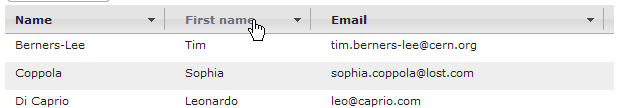
- You now see, that the table is sorted by first name. This is also indicated by the arrow besides the column name. To reverse the sort order, simply click the same column name again. 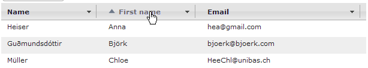
- As you can see, the sort order has been reversed. 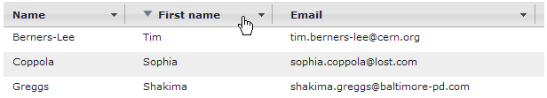
Additionally, you have the possibility to select the columns which you want to display in the table.
Example: Selecting the displayed columns
To display additional columns:
- Click on the arrow button on the right side of a column. 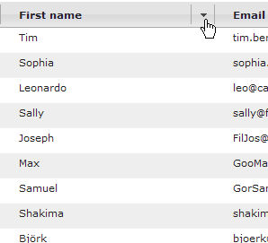
- You now see a list of all columns that are available for display. 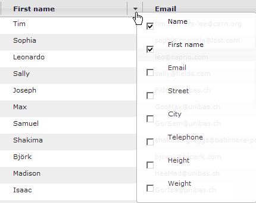
- In this list, click on the checkbox besides the column names to activate or deactivate the columns you want to show / hide in the table. 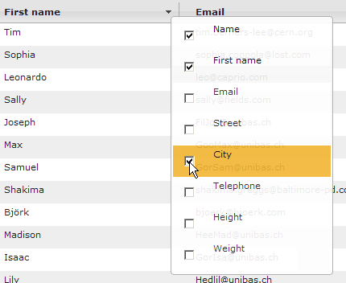
2.1.2 Quick search
The quick search window on the top left of the SP table allows you to search for any text within the SP records. As soon as you enter any text in the search field, the table will be filtered and only SPs that match your search will be shown.
Example: Searching for an SP by name
To search for an SP by name, e.g. you search for Mr. Henry Jones.
- Click the search box on the top left of the screen. 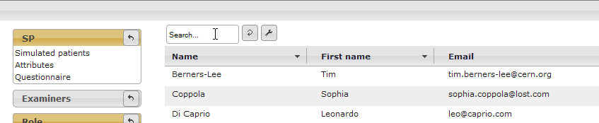
- Enter their name, e.g. Henry and you will see the results almost immediately. 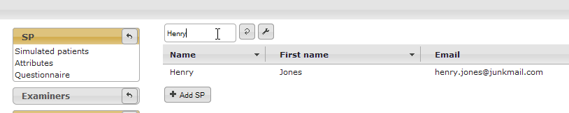
Besides searching for SPs by name you can also search by other attributes.
Example: General use of quick search
To search for an SP by city, follow these steps:
- Move the cursor over the wrench symbol to the right of the search box .
- Click the columns in which you want to search, e.g. City. 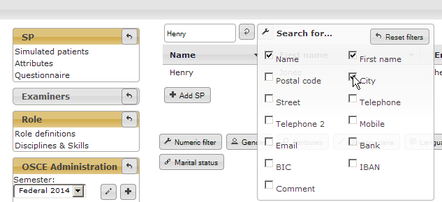
- Enter the search term you want to search by, e.g. the name of the city. As in the previous example you will see the results almost immediately.


As you could see in the two examples you can search the following columns via the quick search box: Name, First Name, Postal code, City, Street, Telephone, Telephone 2, Mobile, Email, Bank, BIC, IBAN, Comment.
A click on the arrow symbol executes the search once again.
2.2 Advanced filters
Since there are many non-textual fields that characterise an SP in the database, more sophisticated search methods are available. With the advanced filters that can be found below the SP table, it is possible to filter the table by numeric ranges, gender, profession or even custom information defined in the questionnaire.
This filter functionality can be found in the role management chapter again. There, the exact same filters can be used to define which criteria a simulated patient must fulfill to be suited for a certain role.
To filter the table with one of the advanced filters, click on one of the available filter buttons shown in figure 2-4.
2-4: The advanced filters, available for searching SPs
After you click on one of the buttons a dialog window comes up. For example, if you click on the numeric filter button , a dialog like the one shown in figure 2-5 appears.
2-5: The numeric filter box with the linkage field, parameter field, comparison field and the value field.
Most of the filters and filter options are rather straight forward and don't need a lot of explanation. The ones that do are treated in the following three chapters.
2.2.1 Linkage
The leftmost dropdown menu from figure 2-5 is the same for all of the filter boxes. It contains the linkage operation which defines how the filter is applied in conjunction with the preceding filter. The two possible values are:
- OR: means that an SP has to match with either the preceding filter or the filter that is getting the OR-linkage attribute.
- AND: defines that the criteria of this current filter and the criteria of the previous filter have to apply both.
Note, that the order of criteria is relevant for the linkage-attribute. The linkage setting of the first-defined filter is irrelevant, but the last criterion is always the strongest.
Example: Using multiple search filters
You want to search for female SPs that are either more than 60 years old or younger than 30 years old. Thus, you'd follow these steps:
- Click on the gender button . In the menu that appears you select the gender to be female. 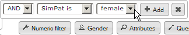
- Now you select women who are younger than 30. To do that you click on the numeric filter button , select the smaller than sign (<) and enter the number 30.
- Finally, you do the same as in item two, but now you select the larger than sign (>), enter the number 60 and select the linkage to be of type OR. 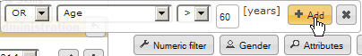
If you have a look at the result now, you will notice that there are male SPs in the result. This is because the last criterion is linked with OR-Linkage, which basically makes this selection to be: Show all SPs who are female and younger than 30 years old, or show all SPs who are older than 60 years old.
Instead we wanted a selection which shows all SPs who are younger than 30 years old or older than 60 years old and are female. To achieve this now, we continue:
- In the criteria table that appeared, click on the trash symbol besides the filter where you filtered by gender. 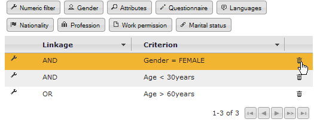
- Now we add the same filter again at the end of the list, as described in item 1. (Click on the gender button. In the menu that appears you select the gender to be female.)
Now you see the results you actually wanted.
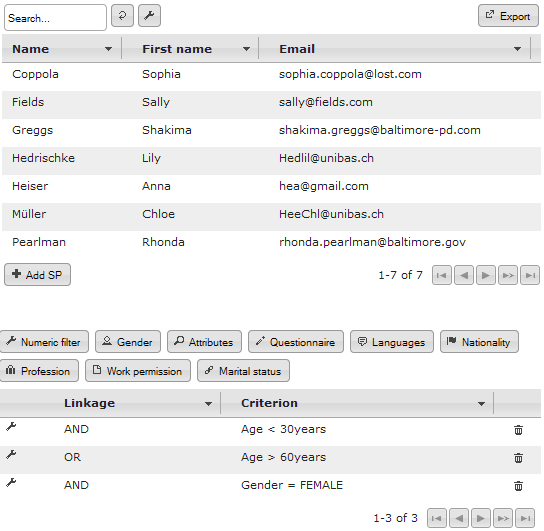The SP database, showing only SPs who are female and either younger than 30 years old or older than 60 years.

2.2.2 Comparisons
Most filters have a comparison operation, where in the simplest case you can just select whether an SP should have a certain attribute or not. For example when using the Profession-filter, you can select if the SP should have a certain profession, but it is also possible to select that he must not have a certain profession.
The numeric filter allows for mathematical comparisons such as equal (=), not equal (≠), greater than (>) and less than (<). Similarly the Languages filter allows the same comparisons to language skill levels.
2.2.3 Attribute and Questionnaire filters
Whereas most of the filters are rather straight forward to use, the Attributes and Questionnaire filters are special. The Attributes filter, shown in figure 2-6, is used to search for user definable attributes (see chapter Define and use attributes). It is easy to use, as it only shows a simple drop-down menu from which you can select all of the available attributes.
2-6: The attributes filter popup. The drop-down menu shows all the attributes that are available for selection.
The more interesting filter is the Questionnaire filter. In it, the questionnaire can be searched. This is a collection of user definable questions, that each SP can answer. For more information on how to use the questionnaire, plese see the chapter in question. With this filter it is possible to efficiently search this questionnaire. When you first click the Questionnaire filter button, you are confronted with a text field into which you can type a keyword to help find the question (see figure 2-7). As soon as you enter something into this textbox, a menu with matching questions appears.
2-7: The questionnaire filter after entering a letter in the suggestive search field, showing matching suggestions
After selecting a question, you can define what answer you are looking for. Depending on the type of the question, either a drop-down menu appears (see figure 2-8) for multiple choice or yes/no-questions, in which you can select the answer you are looking for, or in case of an open question answered with written text, you can enter text in a textbox (see figure 2-9).
2-8: The questionnaire filter after selecting a multiple choice question, showing the possible answers in a drop-down menu
2-9: The questionnaire filter after selecting an open question, showing a text field in which text can be entered
Example: Searching SPs by questionnaire items
Important: Note, that you have to have these questions defined in the questionnaire before this example works. See chapter The questionnaire.
You want to list all the SPs that wear glasses and are motivated by money. This means that the questionnaire has to have some questions defined, which cover these two points. In our example the two following questions are predefined:
- Do you wear glasses?
- What motivated you to participate in our simulation patient program?
The first of the above questions is a Yes/No question, while the latter is an open question.
To create the filters, follow these steps:
- Click on the Questionnaire button . 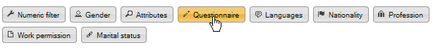
- Enter the word "glasses". A selection box should appear, displaying every question in the database that contains the word "glasses". In the example there is only one available, the question Do you wear glasses, which you now select by clicking it. 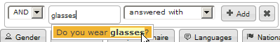
- Make sure that the two drop-down-menus are set to answered with and Yes, then click Add. 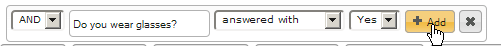
- Now to add the second filter you click the Questionnaire button again.
- Enter the word "motiv" and select the question What motivated you to participate in our simulation patient program?. 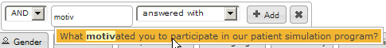
- Make sure that the drop-down-menu reads ansawered with and enter the word "money" in the textbox. Then, click Add. 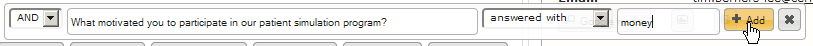
Now you see all the simulated patients that wear glasses and answered the motivation-question with an answer containing the word "money".
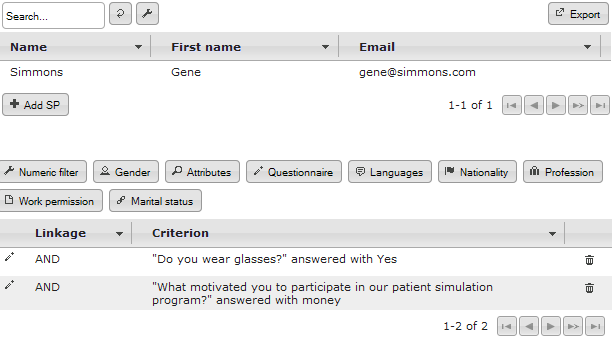SP database with all SPs wearing glasses and motivated by money
2.3 SP details view
As has been mentioned in chapter SP table view, as soon as you click on an entry in the SP table, you are presented with a view that presents all the details that have been recorded of the given simulated patient. In figure 2-10, this view is depicted with highlighted areas of interest.
The general controls on the top right of the screen, highlighted in red, allow you to change the status of the SP or delete the SP, synchronize the data on this SP with the SP Portal, go to the editing screen or print the SPs data.
In the area highlighted in green you have all the regular information about the selected SP. The information is divided up in several categories to not clutter the screen. In the bottom part (yellow highlight) you see the questionnaire for the current SP. Note that the questionnaire contents here are consisting of example data and can be customized to your liking (see chapter The questionnaire).
2-10: The SP details view with the general controls highlighted in red, the details tabs highlighted in green and the questionnaire highlighted in yellow.
2.3.1 Editing SP data
There are several types of data that can be edited. Let's concentrate on the SPs basic data first. The following example shows you how to change SP details. When you click on Add SP below the SP table view or if you click on Edit in the controls panel in the top right of the screen, the same mask will show. So the procedure for editing SP data or adding a new SP is basically the same.
Example: Adding a new SP or Editing SP basic data
We want to edit some basic attributes of the simulated patient Isaac Hausner. After we selected him in the SP table view by clicking on his name, we can edit his data by following these steps:
- Click on Edit in the controls panel in the top right of the screen. 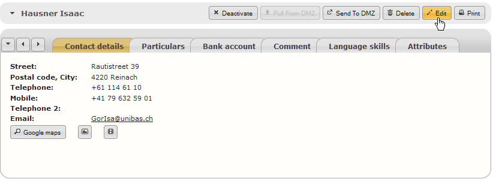
- In the upcoming screen you can edit the name and contact data of the SP. For example you can change his email address. 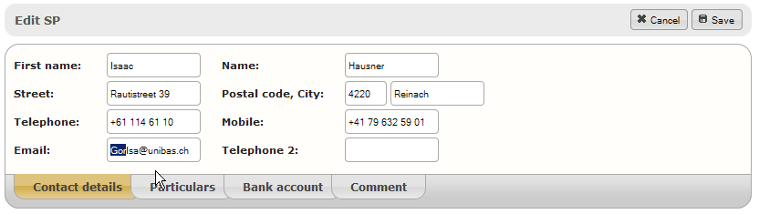
- If you click on the tab particulars, you're able to edit additional information, such as birth date, height, weight, marital status etc. We can e.g. change his profession by clicking on the profession suggest box and clicking or typing a new profession. 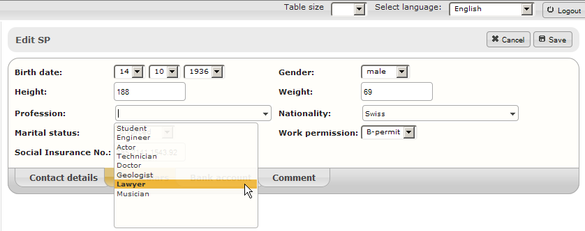
- Editing bank account information works the same way. You can enter account number and bank address information in the entry mask. The country dropdown is the same type of dropdown menu as the profession and nationality boxes found in the Particulars tab. 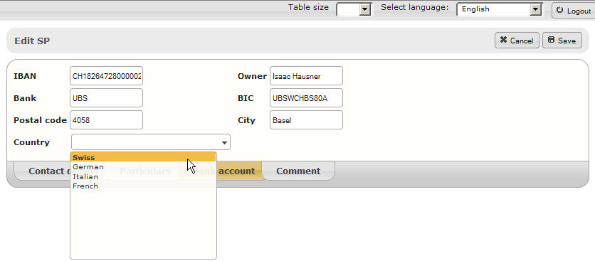
- You may also add comments with custom formatting to each SP. These comments can also be searched using the quick search and can therefore be used to add custom information. The formatting options are a subset of those found in regular word processing software. 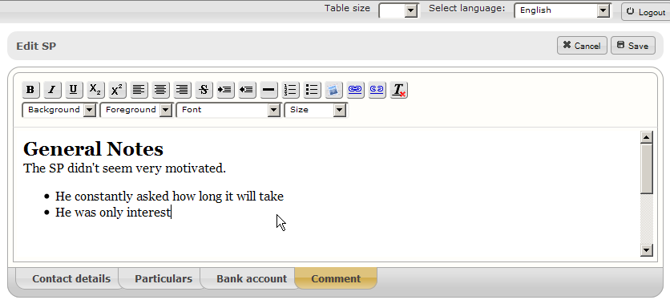
- After you have done your changes, click on Save on the top right of the control panel. If you decided to throw away your changes, you can also click on Cancel. 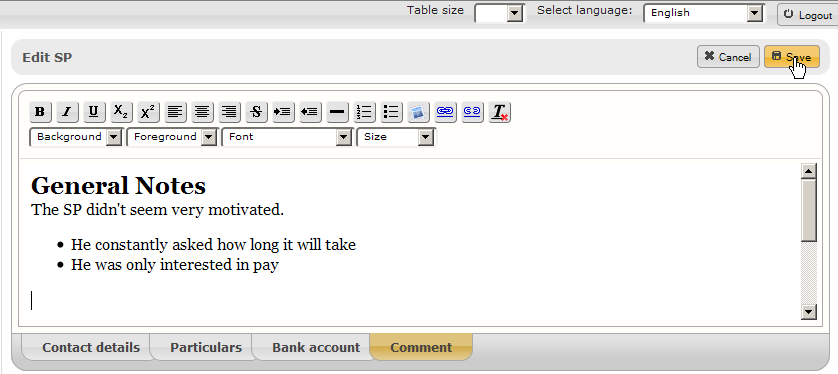
Additionally, there are some attributes that have to be edited by other means. These would be the Language skill, the attributes and the questionnaire. The latter two are treated in their own chapters.
You may want to have certain SPs who are able to communicate in certain languages. The language skills tab allows you to specifically define which languages a simulated patient is able to speak on what level.
Example: Editing language skills
You want to add language skills to a certain SP.
- Go to the Language skills tab in the SP details view. 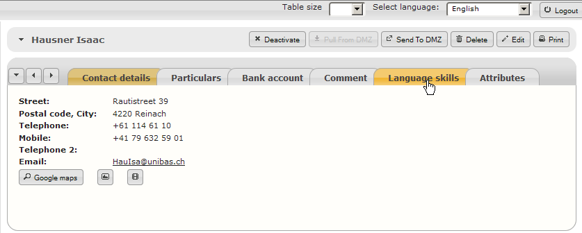
- Select one of the pre-defined languages from the language drop down. 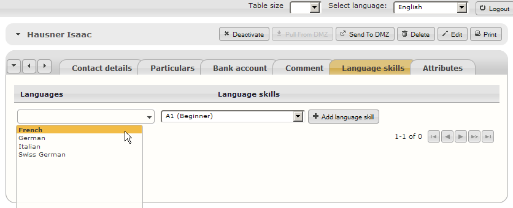
- Select the skill level at which the SP is speaking this language. 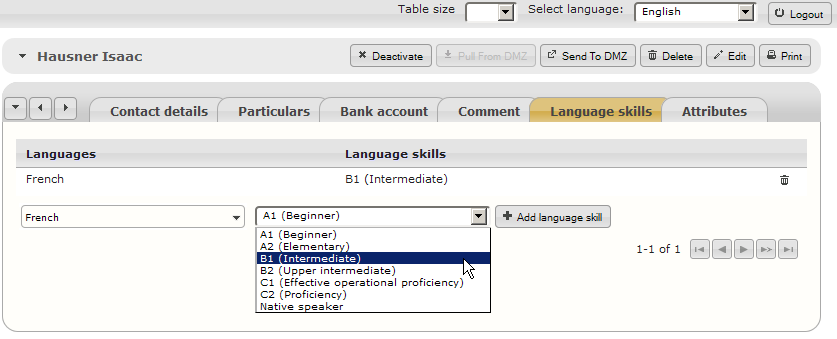
- Click on Add language skill 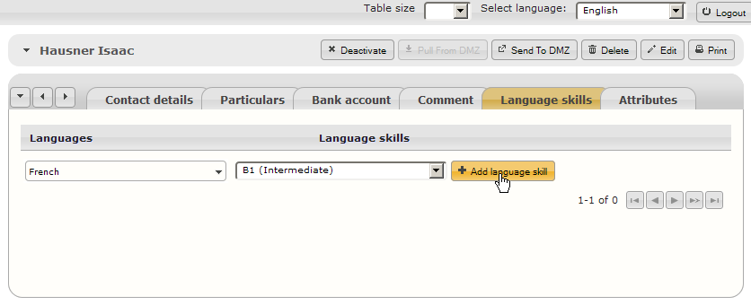
- You will now see the language skill has been added. To delete it again, click on the icon on the right side of the entry you want to delete. 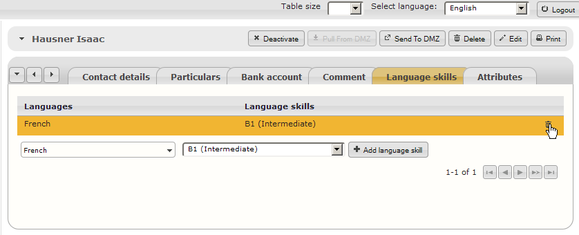
2.3.2 Status, deletion and synchronisation
In the SP database, each SP has a status. There are several statuses an SP can be in and these all have different implications which mainly show in the possible actions of the control panel. In the following list, the implications of each status is described.
- Active: This is the default status and means, that the SP is available for OSCEs and can be modified in any way you like.
- Inactive: An SP can be excluded from participating in future OSCEs by deactivating the SP. This means, that he cannot be selected in any new OSCEs and his data can not be exported to the SP Portal
- Anonymized: After an SP has decided that he does not want to take part in any OSCEs anymore but he has been in OSCEs in the past, the SP can be anonyized. This means that any personal data of the SP gets erased.
- Exported: This status indicates, that the SPs personal data is currently accessible through the SP Portal and to prevent inconsistencies the SPs data can not be edited.
Now a few examples follow to help you with actions that are relevant to the statuses.
Example: Deleting / anonymizing an SP
To delete an SP, follow these steps:
- After you selected the SP to delete from the table, click on the trash icon Delete button on the right side of the SP controls panel. 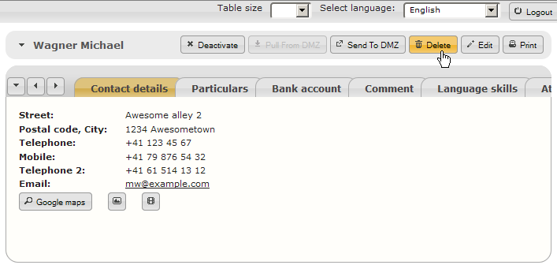
- You will be presented with a pop-up that asks you for confirmation. In this pop-up, click "OK". 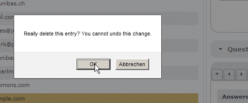
If the SP has already been assigned to a role in an OSCE in the past, the SP cannot be physically deleted from the database. Instead, all SP data will be anonymized (replaced with xxx).
Example: Deactivating and reactivating an SP
- If an SP should be deactivated, click on the Deactivate button. Note that this is only possible if the SP is not currently in the Exported status! 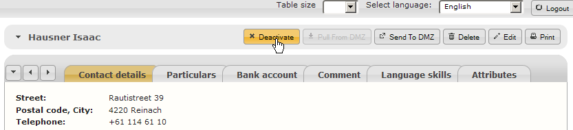
- After the SP has been deactivated, you can choose to reactivate the SP again by clicking on the Activate button to reactivate the SP. 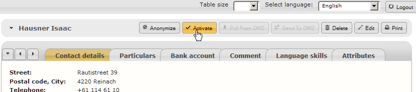
Example: Synchronize SP data with the SP Portal
If you want to synchronize an SPs personal data with the SP Portal, follow these steps:
- After you've made sure that the SP is in an active state, click the Sent To DMZ button. This sends the SP data to the DMZ (Demilitarized Zone - in this case a server that is accessible publicly over the internet) so it can be accessed via the SP Portal 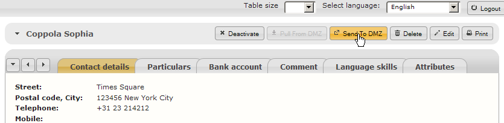
- if the export was successful, you will be notified.
- Now the SP can log in to the SP Portal and edit his data (see chapter 6)
- After the SP has come through and updated his details on the SP Portal, you can reimport the data by clicking on Pull From DMZ to reimport the data. 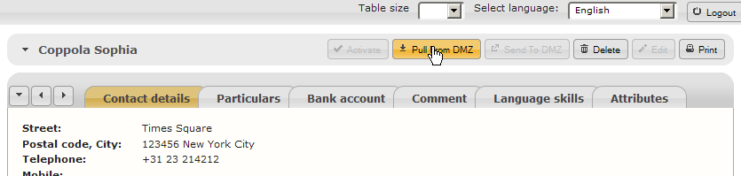
- If the import was successful, you will be notified. 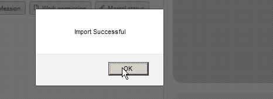

{kind=link}
2.3.3 Define and use attributes
For SPs it is often desirable to exclude certain body parts from examination, e.g. if they are scarred somewhere or just don't feel comfortable with it. Defining such attributes could later on help in assigning suited SPs to roles.
There are three different types of attributes: scar, tattoo and Do not examine. Use them where appropriate - scar if you define a scar, tattoo if you define a tattoo and Do not examine if there is some other reason a certain body part should not be examined.
All the attributes can be found when you click on Attributes in the SP-section of the OSCE Managers navigation. You will be presented with a table showing all the predefined attributes and the option to add new attributes.
Example: Defining new attributes
To add new attributes that could be assigned to SPs, follow these steps:
- In the navigation menu on the left in the SP-box, select Attributes. 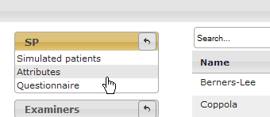
- You will now see a list with all the predefined attributes.
- Select the type of attribute you want to define; either scar, tattoo or Do not examine
- Enter the name of the body part and click on Add attribute.
- Finally, you see that the attribute has been added.
Example: Changing and deleting attributes
The last attribute you added to the list, a scar on the lower leg should be designated more clearly. To change it:
- In the list of attributes, click on the edit button
- A pop-up window appears in which you can now change the type of attribute or change its designation. After you've changed it to what you wanted, click the OK button.
- After you've saved the changes, they should immediately appear in the table. If you decide, that you don't need the attribute after all, you can delete it by clicking the . Be aware that you can't delete attributes which are currently assigned to any simulated patient!
Example: Assigning predefined attributes
To assign attributes that have been previously defined, as shown in the two preceding examples, you have to follow these steps:
- After you selected a simulated patient from the SP table, click on the Attributes tab.
- In the auto-complete box on the bottom left, enter e.g. the word "scar". The box now shows all possible attribute choices containing the word "scar", i.e. it shows all attributes of the scar type. Now, select the appropriate attribute by clicking on the correspondant choice, e.g. "Scar Shoulder (left)".
- Click on the button Add attribute
- You see, that the attribute has been successfully added to this SPs list of attributes.
If you want to delete the attribute from the SP, you have to click on the button with the trash icon: .
Important: Please be aware that attributes are not synchronized with the SP Portal and thus can not be added by the SP himself!
2.4 The questionnaire
The questionnaire allows you to create a custom questionnaire that can be used to store additional data for each SP. Up to a certain extent it is possible to save any potentially relevant additional information that yout want to store for each simulated patient. Each question is grouped with other questions for structure and each question can be in the form of one of four types. Also it is possible to select if a question is visible for an SP in the SP Portal or not.
In the chapter attribute and questionnaire filters you already learned how data from the questionnaire can be used to search for SPs. This chapter explains how the questionnaire is structured and how the questionnaire can be filled in.
You will find the definitions part of the questionnaire, i.e. the place where you can add/edit questions and group them, in the SP-box of the navigation on the left.
The questionnaire definitions can be accessed by clicking "questionnaire" in the SP-box of the navigation
2.4.1 Structuring the questionnaire
The questionnaire has a simple structure. It doesn't just contain questions. Instead, the questuions are grouped. The groups are ordered and the questions within each group are ordered as well. That means you can define the sequence in which the questions will be presented to the SP.
The screen you are initially presented with only shows you the groups that have already been defined and some search boxes and controls. The following screenshot has annotations explaining what you see in the questionnaire definition view.
Overview of the questionnaire definition view
2.4.1.1 Adding a new group
To add a new group, simply enter the name of the group you want to create in the text field on the bottom of the screen and click the Add title button.
2.4.1.2 Group controls
Each of the groups has the same types of controls. These are illustrated and quickly explained in the following screenshot.
Each of these controls refers to an action on the group it [the control] is found upon.
- To expand the group and show the questions, click anywhere on the title or the arrow on the left side.
- To change the title, click the pencil button. A little popup will appear in which you can change the name.
- If you want to delete the entire group, click on the trash bin icon. Be aware that you can only delete empty groups!
- To add questions to a group click on the Add question button.
- To reorder the groups, click on the arrow buttons on the right side. The up arrow moves the current group of questions up, so it appears higher in the list than the preceding group. The down arrow does the opposite; i.e. moves the current group down so it appears after the currently subsequent group.
2.4.1.3 Managing questions in groups
If you click on the name of a group that has questions in it, the group is expanded and all the questions within the group are shown below the title. All the details of the question can already be seen in this table as shown in the screencap below.
- The field on the left shows the number of the question. If you want to move a question to a certain spot within the list, you can enter the number you want the question to have in this field.
- The icon shows the type of question:
- Multiple choice question with multiple selections allowed.
- Multiple choice question with a single selection allowed.
- A Yes/No question.
- An open question with a written answer.
- You see the question text, i.e. the question that is being asked.
- In case of a multiple choice question you also see all the possible answers.
- On the right side there are the arrows that allow you to reorder the questions in the same way as can be done with the question titles.
2.4.2 Adding, editing and deleting questions
If you click on a question such as the one seen in the , you will be presented with the question details screen. There you see the details of the question presented once again, as well as the Edit and Delete buttons.
To delete a question, click on the Delete button.
To edit a question, click on the Edit button.
To add questions to the questionnaire, click on the Add question button as described above. You will be presented with a view in which you can describe a new question. If you clicked on the Edit button of an existing question instead, you will see the same view, except that there is already some data present.
The fields you are presented with are:
- Type: select the type of question i.e. the way the question should be answered. See Types of questions for more info.
- Question: This is the text that will be displayed and should be answered by the SP (or a staff member if the question remains private).
- Belongs to title: This allows you to change the group to which the question belongs to.
- Previous question: As of the writing of this document this does not work and has no influence on anything.
- Send to DMZ: If this is checked, the question will be synchronized with the SP Portal, so the simulated patient is able to fill out the data by himself.
2.4.2.1 Types of questions
There are four types of questions to select from. The following list quickly explains the types of questions. Please note that the screenshots that illustrate these types are taken from the SP details view. The type defines the way the question can be answered. The following types are available:
- Open question: The answer to this type of question is written text. The user who fills out the questionnaire will be presented with a text field to write text in.
- Multiple-Choice with multiple selection: this is a multiple choice question for which one can select multiple answers at the same time by clicking on checkboxes.
- Multiple-Choice with single selection: this is a multiple choice question for which it is only possible to select one single answer.
- Yes/No-Question: this is a simple type that can only be answered by selecting either Yes or No.
2.4.3 Answering questions
Of course the questions can be answered after they have been defined. This can be done by the simulated patient himself, if he has been exported to the SP Portal. For details about answering questions in the SP Portal, see the chapter SP Portal!
This chapter explains how the SP questionnaire can be filled in via the OSCE Manager. To start, go back to the SP table view and select the SP for which you want to fill in the questionnaire. On the bottom of the now visible SP details view you see the questions grouped into the defined groups as explained in the previous chapters.
The questionnaire part of the SP details view with the questions grouped.
In this view you see all the informations about the currently selected question group.
- On the top you can select the group of questions you want to have displayed by clicking on the appropriate tab. Note that these are the same groups as they were defined earlier.
- To the left of the tab selection you have arrow buttons which help you to navigate the tabs. They are mainly necessary if there are too many tabs to conveniently display. you can use them to scroll the tab bar to the right, to the left or to select a tab via drop-down menu.
- When a tab is selected, all the questions in the corresponding group are displayed in the table below. Its columns contain:
- An indicator whether a question has been answered or not . This is also indicated by the background color. Orange/yellow indicates unanswered questions and white/grey background indicate answered questions.
- The questions themselves.
- The answers whereas the possibilities to answer the questions depend on the type of question.
- A field that allows you to add comments. Please be aware, that comments can not be added by the SP in the SP Portal but only by a staff member in this mask!
- On the bottom you have a search field in which you can type a keyword to find a question containing this keyword.
- Furthermore there are two checkboxes that allow you to select wheter to display only answered, unanswered or both types of questions. Please be aware, that as of writing this document, the default is to only display answered questions!
3 The examiner database
The examiner database is comparable to the SP database albeit with a reduced feature set and for managing examiners instead of SPs.
TODO: finish this chapter
4 Role management
In this part of the OSCE Manager application you can manage roles. Roles encompass everything that is tied to one station in an OSCE where one particular skill is tested and usually an SP plays the role. All the roles that will be resorted back to during an OSCE have to be previously defined here. If you want to change an aspect of a role, such as the SPs script, you usually just edit the role and don't create a new role just foor that.
A quick sidenote about terminology: The role basically describes every aspect of what will be called a station during an OSCE. Since the role is universal (i.e. it has nothing to do with a specific room or OSCE), we do not call it a station. The term station will be used when organising an OSCE and assigning a role to a room.
4.1 Disciplines, skills & roles
Roles are grouped into disciplines and skills. Each role tests one particular skill, which in turn belongs to a certain discipline. For example there may be a discipline Ophthalmology within which there are several skills that you may want to test, e.g. Ocular Tonometry and Ophtalmoscopy.
Through this categorisation of roles it is easier to find the right roles when you start organising an OSCE.
4.1.1 Defining and editing disciplines
To get an overview of all the available disciplines, click on Disciplines & Skills in the Role group of the OSCE Managers main menu.
Disciplines & skills
You will be presented with an overview of all the disciplines in a table that is functionally similar to e.g. the attributes table. You have the possibility to add new disciplines by entering a name for the new discipline in the bottom left box and click Add discipline. It's possible to edit the names of defined disciplines by clicking on the corresponding edit button or deleting disciplines by clicking on the delete button . Note that you can't delete disciplines that have any skills assigned!
Defining and editing disciplines
Of course it is also possible to filter the table by entering a discipline name in the search box on the top left of the screen.
4.1.2 Defining and editing skills
To define and edit skills, first you must click on one of the disciplines in the table described in the previous chapter.
You will be shown another table where you see all the skills associated with the selected discipline. In the screenshot below for example, you see all the skills that are defined within the discipline of First Aid.
All the skills that can be found in the First Aid discipline.
As usual, to edit a predefined skill, click on the edit button and to delete a skill, click on the delete button . Note that you can't delete skills to which a role has already been defined!
To add a new skill, click on the Add skill button. You will be presented with a dialogue as shown in the screenshot below.
Defining a new skill
There are three fields you have to fill in that define the skill:
- Skill: this is the name of the skill.
- Max. students: The maximum number of students that an SP can endure when he plays a role to test this skill. This will force the OSCE Manager to make a change of SP during an OSCE when this number of students has been reached for an SP testing this skill. (*)
- Academic year: The academic year in which this skill will be tested in an OSCE (BA.1 - BA.3 or MA.1 - MA.3 for Bachelor and Master respectively).
4.2 Role table view
In the navigation, when you click on Role definitions, you will see a regular table view, where all the available skills are listed and for each skill, separated by commas, all of the available roles for a skill. The first of the following two screenshots shows you how to access the role definitions screen and the second capture shows you the view with some explanations in red.
Opening the role table view by clicking on "Role definitions".
The role table view
In this view, you have the following possibilieties:
- Using the search textbox and the search settings , you can search for roles by any criteria. (See Searching for roles).
- The table can be exported to a .csv file.
- You can add a new skill using the Add skill button. If you do so, you will be presented with a dialog similar to the one shown in Defining and editing skills, except it also has a field to define the discipline.
- To edit or create a new role, click on a skill in the table.
4.2.1 Adding a new skill
If you want to add a skill in the role table view, first you click on the Add skill button. You will be presented with a small dialog.
Add skill dialog
All in all, the fields to fill in are the same as in the dialog shown in Defining and editing skills, except, that there is also a field to define the discipline. Please see this chapter for a short explanation on what each field does.
Please note, that you should fill in the discipline in any case, even though the application does not force you to!
4.3 Role details view
In the role table view, if you click on a skill that already has an assigned role, you will be presented with the role details view, where you see all the data of the first role belonging to the skill. Below you see a screenshot with some explanations in red.
The role details view as seen when one role is defined for the selected skill
This details view can be mainly divided intio four parts:
- In the top you see several tabs, the above screenshot depicts 2 tabs, one designated "LOC A", and the second designated with a + sign. "LOC A" in this case is the acronym designating the currently selected role and the golden color indicates, that this is the currently selected role. To add a new role to the selected skill, you click on the "+" tab. Any further roles will be displayed in the tab bar, as soon as they have been defined.
- The basic controls on the title bar, to the right of the roles full name, contains some basic actions that apply to the role as a whole, such as viewing previous versions of the role, editing the basic information of the role, copying the role, printing the role or even deleting the role.
- The details tabs group all the information into appropriate categories:
- The top row of tabs is used for editing some basic information about the role, such as information about who wrote it, keywords to find it and in which OSCEs it has been used. Basically it consists of information that is mainly relevant to identify or find the role.
- The bottom row of tabs contains the information that actually is relevant for playing the role such as the checklist, exclusion criteria, scripts, etc.
4.3.1 Creating, editing or copying a role
There are three ways to access the editing screen for basic role information:
In the role table, you click on a skill to which you want to add a new role. If there are no roles present yet, you will be immediately presented with the mask where you have to fill in the roles' basic information.
If there is already at least one role present in the selected skill, you will have to click the "+" button on top. .
If you want to edit the basic information of an existing role, you click on the Edit button on the top right of the roles control bar.
After you've done one of the above steps, you will see the following view. Note: if you are creating a new role, most of the fields remain empty, of course!
The entry mask for a new role or editing basic information about the role
The mask that you see contains the following fields:
- Acronym: This is an abbreviation or a short hand name for a role. It will be displayed anywhere where a short hand name is more convenient. Please choose a name that makes it clear what role is meant.
- Role designation: This is the full and descriptive name of the role. This will be used whenever there is enough space available to display the full name of the role.
- Role type: There are three possibilites for this option:
- SimPat: designates a regular role, where a simulated patient has to be examined by the student.
- Supernumerary: a role where someone has to play a role which doesn't involve being examined.
- Material: a role where only some equipment is required, but no one has to play any role.
- Academic Year: This allows you once again to define in which academic year a role is to be tested in the OSCE.
- Skill: This allows you to change the skill to which the role belongs.
- Absolute number of backup-SPs: This is the absolute minimum number of SPs that would be on backup for this station during an OSCE.
- Proportion of backup-SPs vs. no. of circuis: The number of SPs that are on backup per circuit for this role. I.e. if this role is used on four circuits in parallel at an OSCE, the stated number of SPs times 4 have to be there as backups.
If you go to the checklist tab, you'll see only one field where you can give a designation to the checklist of this role.
Field for designating the checklist.
After you've defined all the basic information, you can click on Save to store your changes. If you've been editing an existing role, you will be presented with a dialog. See next chapter
You can also copy a role. To do this, simply click on the Copy button in the control bar on the top right side. This creates a copy of the current role.
Important: Be aware that as of the time of writing this manual, checklists and scripts are not copied; that means that a copy of a role references the same checklist and script as the original, and changes to either of those will be seen from both roles.
4.3.2 Roles and versions
Over time you may want to change a role. Maybe you've had a role that you had in an OSCE for two consecutive years, but now you want to change some parts of it to not let the students' information exchange ruin the novelty of the role. Thus you decide to change some symptoms and therefore the SPs role and the checklist have to be changed. Now the OSCEs that were held in the past still used the role with the old checklist and script, and you want to keep it that way. Now what to do?
Luckily, the roles have versions. If you go to the editing screen and click on the Save button you will be presented with the following dialog:

Selection between major changes or minor changes
You can select between:
- Major changes: This is what you would want to do in the above scenario. This effectively creates a copy of the role as it was and archives it.
- Minor changes: If you don't need to access an old version and just did some small changes, you select minor changes. This just overwrites the current version of the role.
Everytime you make a change that triggers the appearence of the version dialog, and you select either Minor or Major changes, the version number of the role gets updated. In case of a major change, the number before the dot gets bumped and the number after the dot gets reset to zero (e.g. from 1.2 to 2.0). In case of a minor change, the number behind the dot is increased by one.
Important: Note, that this dialog only appears when you either save changes, that you made in the Edit screen of the role or when you save changes you made to the role scripts. If you change any other aspect of the role, even the checklist, you will not be asked about a version change. Thus, if you know you're going to make significant changes to a role, you have to take care of correct versioning yourself!
Since the role gets archived when you do major changes to it, you can still access old versions of the role if you want to by clicking the  Previous version button in the main control bar. If you are currently looking at an older version of a role you will notice this by the fact that you can't make any changes. To access future versions, click on the appropriate Next version or
Previous version button in the main control bar. If you are currently looking at an older version of a role you will notice this by the fact that you can't make any changes. To access future versions, click on the appropriate Next version or  Current version buttons.
Current version buttons.
4.3.3 Printing a role
To print a role, click on the Print button. You will be presented with a small dialog where you can select what you want to print (shown below).
The role printing dialog showing you all the printable options.
The same dialog with the script selection dropdown menu expanded.
- Role Scripts: In this dropdown menu you can select whether you want to print scripts and if so, whether you want to print all the scripts or just the one for either the examiner, simulated patient (SP) or Station specific documents. (See role scripts for detailed information on these documents).
- Master data contains part of the basic role information, specifically the general identification of the role as seen in the Role tab on top.
- Room facilities: check this if you want to print the room facilities table.
- Checklist: tick this checkbox if you want to print the examiners' checklist associated with this role.
- Files: if you want to print additional files required or associated with this role, activate this box. (see chapter cards for information to additional files).
After you've made your selection of what you want to print, click on Print. The OSCE Manager will create a PDF document that you then can download and print.
4.3.4 Basic role information
This chapter focuses on the Role authors, Keywords, Learning Objectives and Past use of role tabs in the role view. The Role tab has already been covered in Creating, editing or copying a role.
4.3.4.2 Keywords
This tab shows a table of keywords associated with this role. These are meant to be used as an aid for finding this role. When searching for roles it is possible to search by keywords. These keywords can be added in this view.
To add a keyword to the list, just enter the word you want to add in the dropdown / suggestive textbox on the bottom left of the table and click the Add keyword button. To delete a keyword, click the delete button that is on the same row as the keyword you want to delete.
Screenshot of the keyword table with red annotations about the interface functionality.
4.3.4.3 Learning objectives
TODO: Learning Objectives (this is still quite buggy)
http://sclo.smifk.ch/sclo2008
4.3.4.4 Past use of role
Past use of role is simply a table that lists all the OSCEs in which the current role has been used in the past. You have the possibility to limit the number of shown OSCEs by date.
* TODO: finish, this is a pretty simple view, but it could and should be improved*
4.3.5 Checklist
This is one of the core aspects of the role. This is the checklist that the examiners will fill out to evaluate the students during the OSCE. There is the possibility to print the checklist, so it can be filled out in paper form, or you can also export the checklist to eOSCE, an iPad application, that allows the examiners to fill out the checklists on a tablet computer.
In the screenshot below, you'll see a view of the checklist in a role about Loss of consciousness with colored annotations. You can see, that the checklist is divided into several sections that group questions or items, that belong together.
An example checklist with colored annotations.
- Name: Each checklist has a name that is displayed in the tab bar. See creating, editing or copying a role.
- Section: As mentioned above, the checklist is divided into sections. Each section consists of a section title, a description and contains questions. They can be ordered arbitrarily. Sections can be imported from other roles.
- Question: Each question (or checklist item) belongs to a section and consists of a question text, an instruction text and an option that marks the question as a question to mark a general impression. Furthermore, there are options and criteria belonging to each question.
- Options: Options are the possible options an examiner has to answer the question. Usually the options are ratings of the students performance in the topic covered by the corresponding checklist item.
- Criteria: These are a list of items that help the examiner assess which option to choose. Usually these are actions a student has to take to in order to fulfill a criterion.
4.3.5.1 Creating and importing Sections
To create a new section within a checklist, click on the Add section button, that you find on the bottom of checklist. You will be presented with the dialog shown in the screenshot below.
The Add section dialog.
- Title: The name of the section. This will be displayed on top of the new section.
- Description: This text will be shown below the title to clarify the title.
After you've saved your new section by clicking on the Ok button, you'll see your newly created section on the bottom of the checklist.
The newly added and empty section.
If you want to edit the section title or description, click on the edit button .
If you want to delete a section, click on the delete button . Note, that this deletes the section as well as all the questions contained within the section!
If you want to import an existing section with all the quesions contained within it, click on the Import section button on the bottom of the checklist. You will be presented with another dialog from which you can locate the section you want to import.
The Import section dialog.
The dialog shown above simply lets you locate the section you want to add by specifying the role the checklist belongs to. This can be easily made by defining the discipline and actual role the checklist belongs to. In the section field you can select the section you want to import. Note, that you also have the option "All", which allows you to import a complete checklist.
After you've chosen the right list, click on the OK button and you will see the newly imported section in your checklist.
4.3.5.2 Re-ordering sections.
There are two possibilities to reorder sections.
- As in the questionnaire, it is possible to click on the arrows besides the section titles to move a section up or down in the checklist.
The arrows to move a section up/down the checklist.
- You can use drag & drop functionality to achieve the same. To do this, move the cursor onto the section title until it changes into a cross-shaped cursor. Then click on the section header, drag it to the destination and let go of the mousebutton.
Animation depicting the dragging/dropping of one section
4.3.5.3 Organizing questions
This is comparably simple to the way sections are created or imported. To define a new question, simply click on the Add question button in the section where you want to add the question to. You will be presented with the dialog shown below.
The Add question dialog.
- Question: This is the actual checklist item that the examiner has to answer and will usually be used for the students evaluation.
- Instruction: This is additional information that will be printed in a smaller font below the questions and is meant to be used for additional instructions.
- Is Overall Question: This checkbox is used to mark questions that are intended to summarise the assessment, such as: "How was your overall impression of this student?"
Basically the same dialog will be shown if you choose to edit a question by clicking the edit button.
To import a question the procedure is similar to importing sections. Simply click on the Import question button in the corresponding section and you will be presented with a dialog that lets you specify the role, section and question you want to import. Note that you can only import questions from the same skill!
Furthermore it is also possible to reorder questions the same way it is possible to reorder sections, either by simple drag and drop or by clicking the "move up" / "move down" arrows.
Animation showing the reordering of questions by using drag & drop.
Note that you cannot move a question to another section using this method. If you want to move a question to another section, use the Import question functionality!
To delete a question, click on the corresponding delete button .
4.3.5.4 Checklist options
Options are the available choices the examiner has to answer a question in the checklist. It is important to note that depending on how these questions are configured, the choices the examiner makes do have immediate influence on the number of points a student can achieve.
To add a new option, click on the button in the option box within the question you want to add the option to.
Adding a new option to a question
When clicking the button, you will be shown the dialog below.
The add option dialog.
- Option: This is a textual description of the option that helps the examiner assess the student. This is usually some textual description of how well the student has managed to fulfill the criteria for this question.
- Value: This is the actual number of points that the student will achieve in this checklist item if this option is selected. These points will be used for the final evaluation and therefore for assessing whether a student passed the OSCE or not.
- Criteria count: For certain types of questions, the student has to fulfill a certain number of criteria. If this is such a question, you should select the number of criteria that the student has to fulfill in order to achieve this option.
The display order of options can be adjusted via drag & drop. They can be edited or deleted by using the appropriate buttons.
4.3.5.5 Checklist criteria
These criteria are meant to help the examiner evaluate the student. These are simple keywords that will be shown along with the questions and they are used to check whether the student did implement all the important steps. For example when the student has to assess the reasons of a loss of consciousness in an SP, he has to ask certain questions, like if there were previous episodes, previous head injuries, if it involved vomitting, etc. Together with the criteria count these criteria guide the examiner to correctly evaluate the students.
To add a new criterion, click on the button in the Criteria box.
Adding a new criterion.
You will be presented with one simple text box to enter the criterion in.
The add criterion dialog.
Simply click on the OK button, as soon as you entered a valid new criterion.
To rearrange criteria you can simply drag & drop them in the same vein as it is possible with sections, questions and options. To edit or delete them, click on the appropriate buttons.
4.3.5.6 Exporting checklists
As has been mentioned before, it is possible to export the checklists to an iPad application that allows the examiners to electronically fill out the checklist. In the context of an OSCE exam, this is usually done in the Export data to eOSCE menu item. But if you want to export only one single checklist to test how it looks in eOSCE on an iPad, you can click on the Export checklist button in the bottom of the checklist.
This will create an .osceform file, that you can import into the OSCE-Admin software which belongs to eOSCE. Note, that this exported file only consists of the checklist and no students or examiners will be assigned whatsoever. For more details about how to import data into eOSCE, please refer to their documentation.
4.3.6 Criteria for SP-selection
In this tab, you can define the criteria an SP has to fulfill in order to be adequate to play this role. These criteria are exactly the same as the ones in the advanced filters in the SP database, so please refer to this part of the documentation to find out how they work.
Additionally, there is a possibility to add further criteria that can only be enforced by human intervention. That means, it is possible to add key/value pairs (text), that will be displayed along with the role scripts to help instruct the SPs.
The criteria view with the currently selected criteria. The criteria enforced by the OSCE Manager are seen in the top table whereas the manually enforced criteria are seen in the bottom table.
To add further criteria, enter a unique value into the first (key) field and any value into the second (value) field and click the Add search criterion button on the right.
The further criteria can also be sorted using the up/down arrow buttons and they can be deleted using the delete button.
4.3.7 Room facilities
In the room facilities tab, you can define what equipment needs to be in the room. In lots of cases, for example, there has to be a stethoscope and a divan bed present. All these objects can be added to this table. The table is meant to help organise the OSCE, so you can always check what inventory each room has to have.
Screenshot of the room facilities table.
To add a new object to the list, click on the Add object button on the bottom of the table. You will be presented with the dialog shown below.
The add object dialog.
- Object designation: The name of the object that should be added to the rooms inventory. This is a suggestive dropdown box into which you can enter text and it suggests you the possible choices. All the objects that you want to be able to add to a rooms inventory have to be previously defined in the room facilities administration!
- Quantity: designates the number of this type of object that has to be used. Please note the implications that the Allotted to... item has to quantity!
Allotted to...: here you have several possibilities:
- Day: This means that the same object will be used for at least the whole day. This would be appropriate e.g. for a divan bed.
- Examiner: Each examiner receives his own object. This could for example be necessary for iPads, that are customised per examiner.
- Student: There needs to be at least one specimen for every student that participates in this room. Appropriate e.g. for a pair of rubber gloves.
- Patient: Items that need to be changed for each SP.
Of course, once again it is possible to delete entries in this table by clicking on the delete button .
4.3.8 Cards
The term cards stems from the fact that for certain roles in OSCEs, cards were used to convey additional information to the student that could not have been given any other, such as e.g. how the eye would actually look if the SP would actually have some kind of disease. In that case the card would simply show a photograph of an eye that shows the desired symptoms.
Technically, in this tab you can simply store any kind of file that needs to be used in the station, such as image files, video files or what ever else may be needed.
A first glimpse of the table shows you which files have already been uploaded. You have the possibility to re-order the table by clicking the appropriate up / down arrow buttons and you may download files that have been uploaded by clicking on the download button . To delete files, as usual, click on the delete button .
If you want to upload a new file, click on the Browse... button to locate the file you want to upload on your hard disk, add a description in the text box and click the Add card button.
Adding a new file to the list of cards.
4.3.9 Role scripts
This section allows you to create role-specific rich text documents or tables, that can be printed along with everything else from the role. This functionality is mainly used to add scripts for SPs, task descriptions and possible additional documents, such as maybe additional instructions for the examiner.
When you click on the Role scripts tab of a role, that does not have any role scripts assigned yet, you have to choose what kind of documents this role requires. This is done by selecting a template of document components. These document components describe who needs what document. See the chapter on document components for additional information. In this manual I work with components I named "Default Role Documents", that consist of a task description, a script for the SP and additional instructions for the examiner.
Note, that these document components first have to be defined in the menu item Document components. If there are none defined yet, in order to create role scripts you have to define the components first!
To get started, select the document components you desire for this station in the dropdown suggestive search box and click the Select document components button.
Selecting document components.
You will be presented with an overview of the documents that are contained within the selected component. In the following screenshot you will see this view with colored annotations.
Role scripts view with empty role scripts
What you see in this perspective are several things. All the documents that are contained within the selected document component can be seen. Each of these documents does have:
- A title / description. This should tell you what this document should contain. In the example above we have e.g. "Task description" which is a pretty obvious hint.
- A box containing the intended audience of this document. This can be used when printing the role, to only print what you actually need. Maybe you have trainings for simulated patients for which you already need the scripts for the SPs. Then you only print the documents that are designated with "SP".
These last two items have to be predefined in the document components. The only thing you can actually do here is:
- Change the document components that this role uses by selecting another document component template from the dropdown menu on the bottom of the screen and clicking Select document components.
- Edit the actual documents by clicking the Edit button for the appropriate document.
When you edit a document by clicking the edit button, you will see a rich-text editor such as the one you already saw in the edit SP view. It's feature-set is just a limited set of the ones found in general word processing software. After you're done editing the document, click on the save button to save your changes. You will be asked whether this is a minor or major change to the role (see Roles and versions for explanation).
Screenshot showing the rich text editor opened on a Task description
6 System administration
http://sclo.smifk.ch/sclo2008